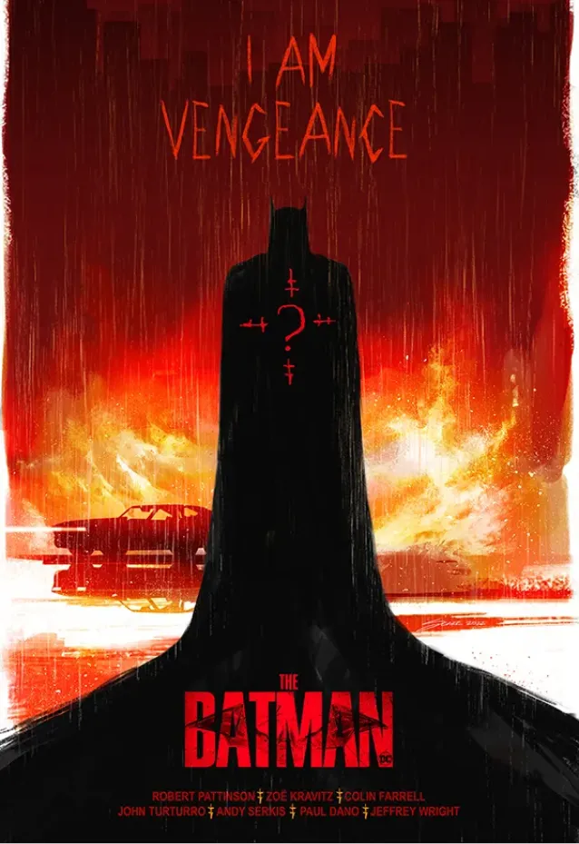
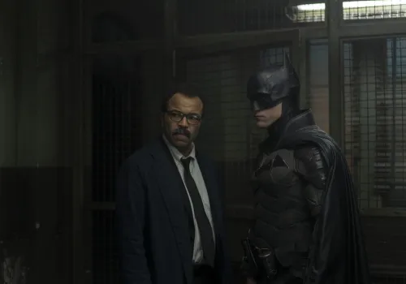
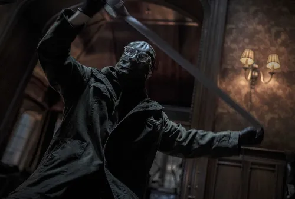
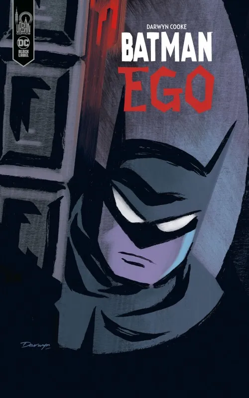
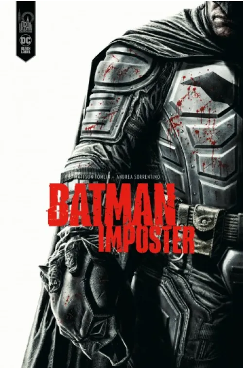
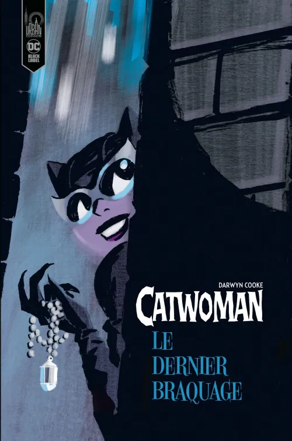
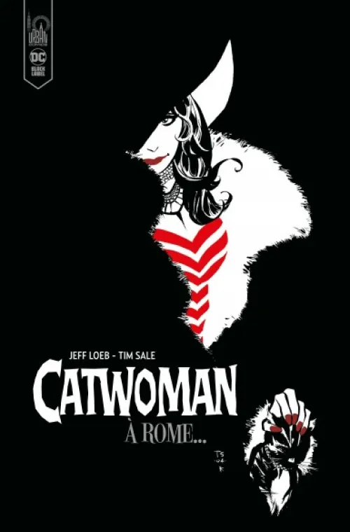
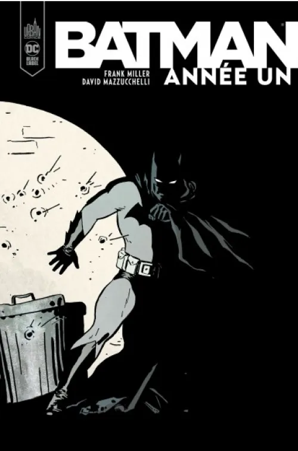
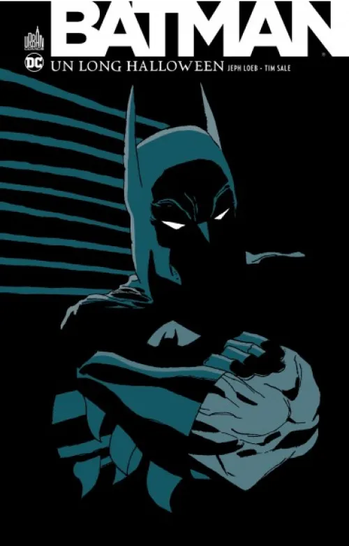
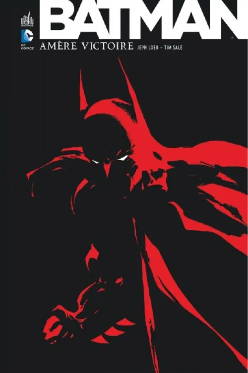

Présentation du film
Dans ce film on découvre Batman deux ans après qu'il ait décidé de commencer sa lutte pour combattre le crime. On voit un Batman qui collabore avec la police et qui endosse le rôle de détective, face à un nouveau méchant connu sous le nom de Shpinx, qui laisse des énigmes parfois mortelles dans tout Gotham.
 Et même si ce Batman ne suit pas à proprement parler l'univers cinématographique de Dc comics , personnellement je ne trouve pas ça dérangant. Au contraire on découvre une nouvelle facette du chevalier de Gotham, qui d'ailleurs ne se fait pas encore appeler Batman mais Vengeance.
Information à propos du film
The Batman
est un film réalisé par Matt Reeves sorti en 2022 qui ne fait pas suite à l'univers
cinématographique DC.
Pour la réalisation de The Batman
Matt Reeves s'est inspiré de plusieurs comics de Batman déjà existent :
Batman Ego

Batman Imposteur

Catwoman le dernier braquage

Catwoman à Rome

Batman année un

Batman un long halloween

Batman amère victoire

Le film a reçu beaucoup de critiques positives de la part des spectateurs et de la presse, soulignant son ambiance sombre qui tire sur le thriller et des plans de caméra de qualité.
Avec un gain d'environ 800 millions de dollars au Box-office mondial, Matt Reeves a rapidement confirmé une suite
pour The Batman
mais il faudra s'armer de patience car la production ne débutera pas avant la mi-2023.
Mon avis
Si j'ai choisi The Batman
comme film c'est parce que on a enfin eu un long-métrage qui représente Batman
lors de ces débuts ce qui n'avait jamais été encore vue dans les films précédents.
Beaucoup de personne qui n'ont vue Batman que par les films ne savent peut-être pas qu'avant de devenir le justicier de Gotham, que tout le monde connaît avec des gadgets dans tous les sens et des vilains tous plus fous les uns que les autres.
Batman lors de ces débuts n'était qu'un simple détective qui se bat contre la pègre et les différents organisations qui font régner la terreur a Gotham City.
C'est pour moi l'un, si ce n'est le meilleur film Batman qu est sorti jusqu'à ce jour.
Filmographique de Matt Reeves
Matt Reeves est un réalisateur, producteur et scénariste américain.
Dans les années 90, il réalise 2 films, un film d'horreur Future Shock
(1994) et une comédie romantique
The Pallbearer
(1996).
Ainsi qu'une série aux cotés de JJ Abrams de 1998 à 2002.
Il ne connait pas un succèss fulgurant à ces débuts. C'est uniquement en 2008, lorsqu'il réalise le film monstre
de science-fiction Cloverfield
qu'il acquière un succès et une reconnaissance internationale.
Et c'est en 2022 qu'il revient avec le film The Batman
qui est un énorme succès.
Voici les différents films qu'il a pu réaliser :